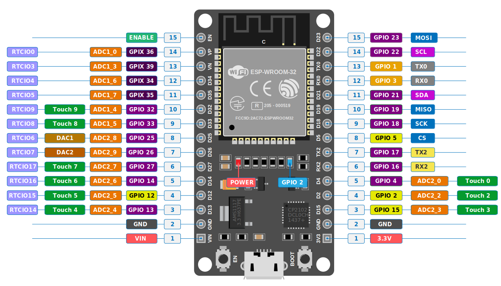

📡 ESP32 Overview
ESP32 is a System-on-Chip (SoC) microcontroller ideal for IoT applications. It combines WiFi, Bluetooth, dual processors, and rich peripherals in a single chip at a low cost (~$10).
Arduino has no WiFi → need expensive shield.
Raspberry Pi has WiFi but costs ~$60–80 and runs a full OS.
ESP32 = built-in WiFi + BT + sufficient processing at ~$10 → sweet spot for IoT.
📸 ESP32 Board Diagram

GPIO19 (D19) = DHT11 data pin in our lab | GPIO34 = MQ-2 AO (ADC input-only)
3.3V = sensor power (NOT 5V — ESP32 is 3.3V logic!) | VIN = 5V input
All GPIO: HIGH = 3.3V, LOW = 0V (unlike Arduino's 5V)
⚡ Key Features of ESP32
📶 Built-in WiFi + BT
802.11 b/g/n WiFi and Bluetooth Classic + BLE. No extra module — ideal for IoT.
🔒 Hardware Security
Hardware encryption — critical for secure IoT data communication.
⚙️ Dual Core 240 MHz
Two Xtensa LX6 cores. Enables multitasking and fast parallel processing.
💾 4 MB Flash
1.5 MB SPIFFS for files. Stores web pages, config files.
🧠 520 KB SRAM
More than Arduino (2KB). Handles complex IoT data efficiently.
🔌 Versatile GPIO
34 programmable GPIOs. UART, I2C, SPI, PWM assignable by code.
3 Key Features for IoT (exam answer): ① Built-in WiFi & Bluetooth, ② Dual-core processor, ③ Hardware encryption for secure communication
🔌 ESP32 Peripherals
| Peripheral | Count | Notes |
|---|---|---|
| ADC | 18 channels (12-bit) | Analog reading (0–4095). GPIO34 used for MQ-2 AO |
| DAC | 2 channels (8-bit) | Analog output — unlike Arduino which has none |
| UART | 3 interfaces | Serial communication (GPIO assignable by code) |
| I2C | 2 interfaces | OLED, sensors (any GPIO by code) |
| SPI | 3 interfaces | Fast data transfer (any GPIO by code) |
| PWM | 16 channels | Smooth control of motors, LEDs |
| Capacitive Touch | 10 GPIO pins | Sense touch without hardware |
| GPIO (total) | 34 programmable | UART/I2C/SPI/PWM can be assigned to any by code |
ADC and DAC pins are fixed. But UART, I2C, SPI, and PWM can be reassigned to any GPIO pin by code. This makes ESP32 very flexible compared to Arduino.
🌡️ DHT11 Sensor — Pin by Pin
The DHT11 measures temperature (0–50°C) and humidity (20–90% RH). It uses a single-wire digital protocol.
DHT11 Physical Pin Layout
DHT11 Pin Table
| Pin # | Name | Description | Connect to ESP32 |
|---|---|---|---|
| 1 (leftmost) | VCC | 3.3V–5V power supply | ESP32 3.3V pin |
| 2 | DATA | Single-wire digital output — sends temp/humidity | ESP32 GPIO19 + 10K pull-up to VCC |
| 3 | NC | Not Connected — leave floating | Nothing |
| 4 (rightmost) | GND | Ground reference (0V) | ESP32 GND |
The DATA pin needs a 10K ohm pull-up resistor between DATA and VCC. Without it, the data line is floating and readings will be unreliable. Some DHT11 modules have this built-in (3-pin modules).
DHT11 Code for ESP32
If code upload fails on ESP32: Hold the BOOT button, press EN button, then click Upload. Release BOOT when "Connecting…" appears. This puts ESP32 in bootloader mode.
🖥️ XAMPP Overview
XAMPP is a free, open-source local web server that creates a local internet server on your own computer. Name is an acronym:
X = Cross-Platform (Windows/Mac/Linux) | A = Apache (web server) | M = MySQL (database) | P = PHP (scripting) | P = Perl
🔧 Apache, MySQL & PHP — Explained
What it does: Takes HTTP requests from browsers (or ESP32) and delivers responses.
In our lab: ESP32 sends an HTTP POST request to Apache → Apache passes it to a PHP script → PHP stores data in MySQL.
Access via: localhost or http://YOUR_IP
What it does: Stores and manages structured data in tables.
In our lab: A table called dht11 stores temperature, humidity, and timestamp from ESP32 every 5 seconds.
Managed via localhost/phpmyadmin.
What it does: Runs on the server. Receives data from ESP32 via POST, then inserts it into MySQL.
PHP files live in: C:\xampp\htdocs\your_project\
Access via browser: localhost/your_project/file.php
💻 PHP Code — Receive & Store Data
🔧 ESP32 WiFi + HTTP POST Code
Key Code Concepts to Know
- WiFi.begin(ssid, password) — connects to the WiFi network
- WiFi.status() == WL_CONNECTED — checks if WiFi is connected
- http.begin(URL) — sets target server address
- http.POST(postData) — sends data. Returns 200 on success
- ipconfig in Windows CMD → find your laptop's IP address for the URL
- 115200 baud for ESP32 (not 9600 like Arduino!)
⚙️ XAMPP Setup Steps
Start XAMPP
Open C:\xampp\xampp-control.exe. Click Start for both Apache and MySQL.
Verify server
Open browser → type localhost → XAMPP welcome page appears.
Create Database in phpMyAdmin
Go to localhost/phpmyadmin → New → create database sensor_db → create table dht11 with columns: ID (int, auto_increment), temperature, humidity, Datetime.
Create PHP file
Create folder C:\xampp\htdocs\dht11_project\. Create testdata.php with the connection + INSERT code above.
Get your IP address
Open CMD → type ipconfig → note the IPv4 Address (e.g., 192.168.1.105). Use this in ESP32 URL.
Upload ESP32 code & verify
Upload code. Open Serial Monitor at 115200 baud. Should show "Connected!" and HTTP code 200. Check phpMyAdmin to see data rows appearing.